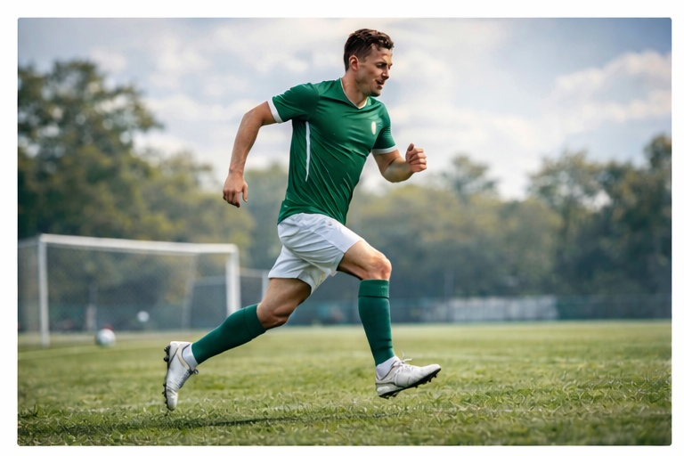
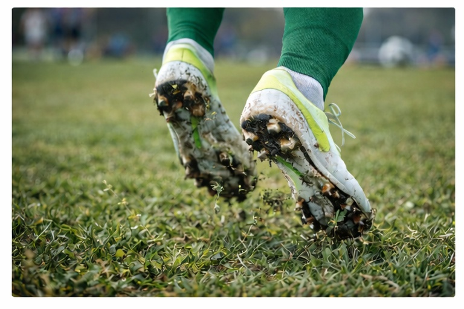

Боль в колене в футболе
Как интенсивные нагрузки и резкие движения влияют на сустав.
Футбол сочетает бег, прыжки и резкие повороты, что создаёт высокую нагрузку на коленный сустав.
Без профилактики и восстановления риск травм возрастает.
Основные причины боли
⚽ Резкие ускорения
Частые старты и торможения перегружают связки.

Контроль нагрузки снижает риск травм.
🦵 Контактная нагрузка
Столкновения повышают риск повреждений.
Защита и техника важны.
👟 Обувь и покрытие
Неподходящие бутсы влияют на нагрузку.

Правильный подбор снижает риск.
⏱️ Перетренированность
Недостаток отдыха повышает травматизм.
Баланс нагрузки — основа формы.
Другие ситуации с коленом
Своевременная коррекция нагрузки помогает избежать травм.
Записаться на консультацию